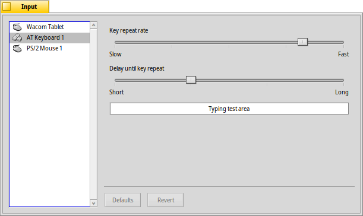
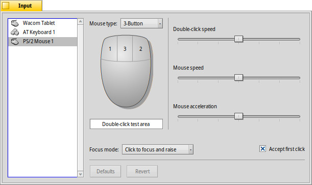
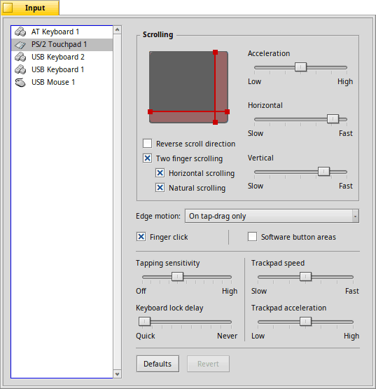

| インデックス |
|
キーボード マウス タッチパッド |
 入力機器 (Input)
入力機器 (Input)
| Deskbar: | ||
| 場所: | /boot/system/preferences/Input | |
| 設定ファイル: | ~/config/settings/Keyboard_settings ~/config/settings/Mouse_settings ~/config/settings/Touchpad_settings |
入力機器 (Input) プリファレンスは、元は別れていたキーボード、マウス、タッチパネル用のパネル、加えてシステムで認識されるその他の入力機器をまとめます。入力機器は左にリストされ、右側のパネルは選択したデバイスの利用可能な設定に応じて変化します。
 キーボード (Keyboard)
キーボード (Keyboard)

繰り返しの速度と、キーを押してから繰り返しを始めるまでの間隔を設定します。下のテキストフィールドで設定をテストできます。
| すべての設定をデフォルト値にリセットします。 | ||
| キーボードの設定を開始したときのものに戻します。 |
マウス (Mouse)

最初に、マウスの種類を 1 ボタン、2 ボタン、3 ボタンから選択してください。マウスの第 2 (右) ボタンをシミュレートするには、CTRL キーを押しながら左クリックします。第 3 (中央) ボタンは、CTRL ALT と左クリックでシミュレートできます。
マウスの挙動を好みに変更するには、ボタンをクリックして、ポップアップメニューから対応する新しい動作を選んでください。
スライダーを右に動かせば、ダブルクリックの速度、マウスの速度と加速度が調整できます。マウスの図の下にあるテストエリアでダブルクリックの速度が好みに合うかチェックするのに使えます。ダブルクリックで単語を選択できない場合は、設定が速すぎます (または、もっと速いクリックに慣れる必要があるでしょう)。
ウィンドウがクリックに反応する方法を定める、3 つの があります。
| これはデフォルトの設定です。クリックされると、ウィンドウはフォーカスを得て、前面に出てきます。 | ||
| クリックされた場合、ウィンドウはフォーカスを得ますが、自動的に前面に出てきません。前面に出すには、タイトルタブ、枠のどちらかをクリックするか、ウィンドウ管理キー CTRL ALTを押しながら、ウィンドウのどこでもクリックしてください。 | ||
| マウスポインターの下にあるウィンドウは自動的にフォーカスを得ます。前面に出すには、 で記載されているやり方と同様にしてください。 |
を有効にすると、ボタンやメニューのようなウィジェットを起動させるためにフォーカスの無いウィンドウをクリックする必要を除きます。これは、意図せずにウィンドウを閉じてしまうリスクを負います (たとえば、ウィンドウタブを押すつもりでうっかり閉じるボタンを押してしまう場合)が、ユーザーのワークフローを大幅にスピードアップします。
すべての設定は即時に反映されます。
| すべての設定をデフォルト値にリセットします。 | ||
| マウスの設定を起動したときのものに戻します。 |
タッチパッド (Touchpad)

縦横の赤線を移動させることで、スクロール領域 (灰色の部分をタッチパッドとした際の赤い部分) を設定できます。設定した領域で指を動かすとスクロールします。
右側のスライドバーでは、全体のスクロール加速度、水平方向および垂直方向のスクロール速度を設定できます。
加速度設定は、ユーザーがスクロールエリアをすばやく擦った時、リストがすばやくスクロールする量を決定します。スクロール速度設定は、スクロールエリアを使用した際の通常の速度をコントロールします。
タッチパッドの絵の下は、以下のチェックボックスです:
上記のスクロールエリアでの 1本指スクロールを使用しているなら、 を有効にすれば、スマートフォンのようなスクロールバーの動きを得られるでしょう: コンテンツをスクロールダウンするために、指を上に移動します。
は、垂直および (サポートされたデバイス上では) オプションで も有効にします。２つの指を平行に垂直または水平に動かしてコンテンツをスクロールします。
は、ちょうどスマートフォンのように動作します。チェックボックスをオフにすると、方向は逆になります。
は、指がタッチパッドの端に達した時のシステムの振る舞いをコントロールします:
| エッジモーション検出を無効にします。マウスが机の端に到達したときのように、指を上げてタッチパッドの中心に移動する必要があります。 | ||
| タップドラッグによって、タッチパッドの物理クリックボタンを使わずにファイルをドラッグできます。ファイルをタップして指を持ち上げずにファイルを中心としてドラッグを始めます。 この設定を有効にすると、指がタッチパッドの端に達した場合もマウスポインターは動き続けます。 | ||
| 上の設定と同じですが、物理クリックボタンを押しながらドラッグしても動作します。 | ||
| この設定は指がタッチパッドの端に達したとき、何もドラッグしていなくても常にマウスポインターを動かし続けます。 |
を有効にすると、(デバイスがサポートしていれば) 指でさまざまなクリックをシミュレートできます:
- 1本指 = 左クリック
- 2本指 = 右クリック
- 3本指 = 中クリック
これらの ”フィンガークリック” に満足していて、タッチパッドの表面エリアをより使いたいなら、 を無効にできます。
次に、下のスライドバーでを調整できます。タップクリックを認識しにくいなら感度を上げ、マウスポインターを移動したいのにシステムがクリックとして認識してしまうなら感度を下げてみてください。
最後に、 を設定できます。タイプ中に偶然タッチパッドを触ってしまったときにテキストカーソルが移動してしまうなら、ロックするまでの時間を減らしてみてください。
| すべての設定をデフォルト値にリセットします。 | ||
| タッチパッドの設定を起動したときの設定に戻します。 |
タッチパッド設定には無関係ですが、一般的な話題に合うヒントがあります:
ボタンを使用せずにタッチパッドだけでドラッグ＆ドロップができることをご存知ですか?
アイコンを一度クリックして指を離さずに少し待った後にもう一度クリックします。すると、マウスポインターに合わせてアイコンが移動するようになり、ドラッグできます。指を離すとドロップされます。
ドラッグをしているときに指がタッチパッドの境界線に達してしまったが、マウスポインターがまだスクリーンの端に達していない場合はどうすればよいでしょうか? 指を離すとドロップされてしまいます。
ハードウェアによっては次の素晴らしい機能があります。境界線に指を置いたままにしておくとマウスポインターが自動でその方向に進みます。